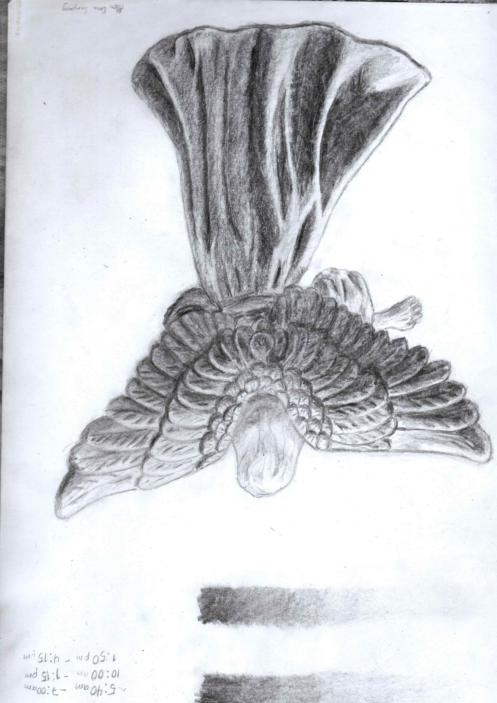
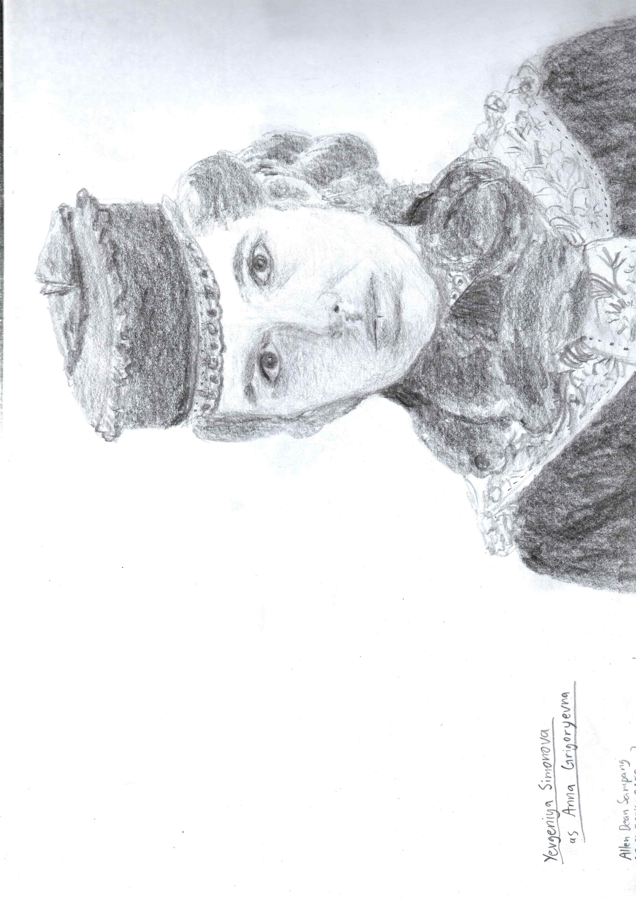
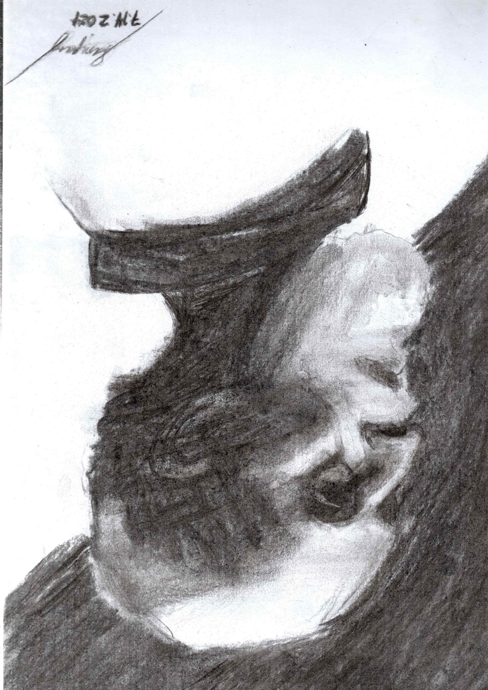
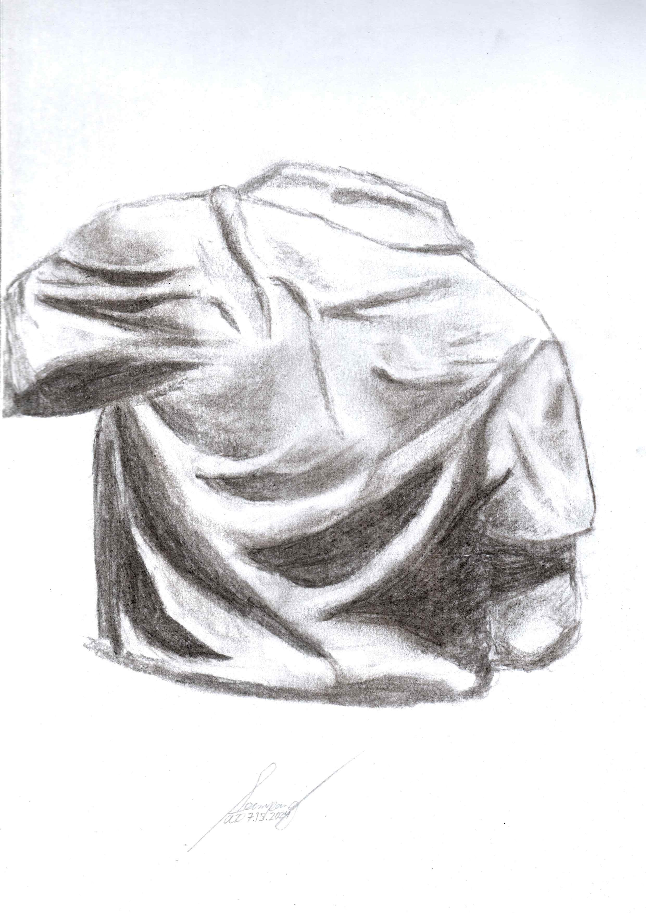
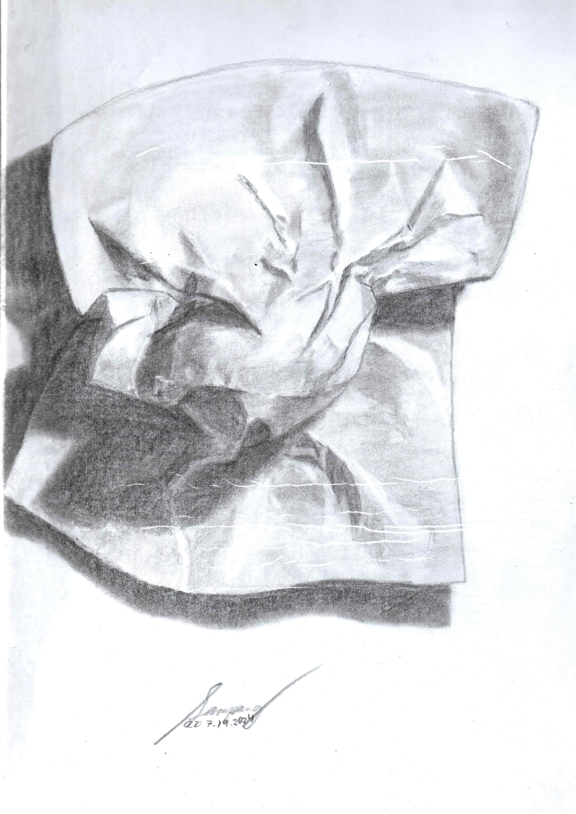
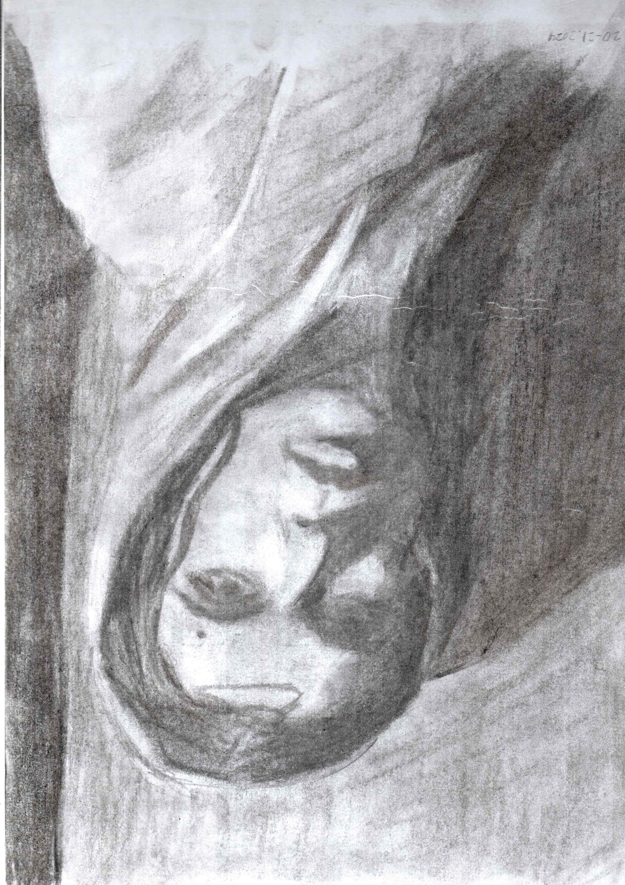
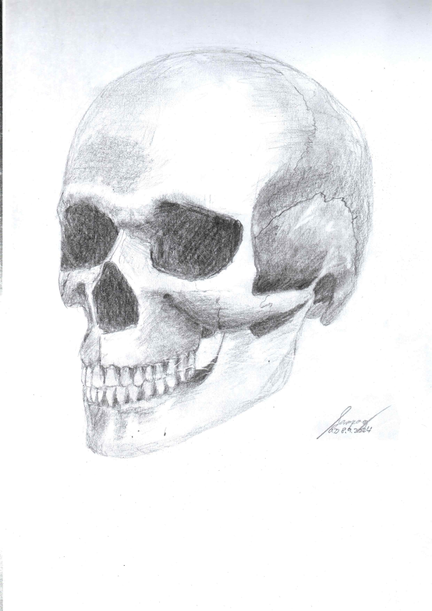
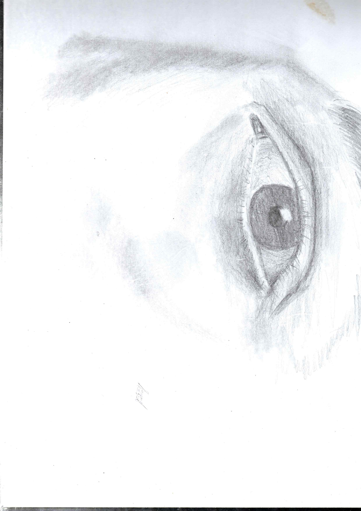
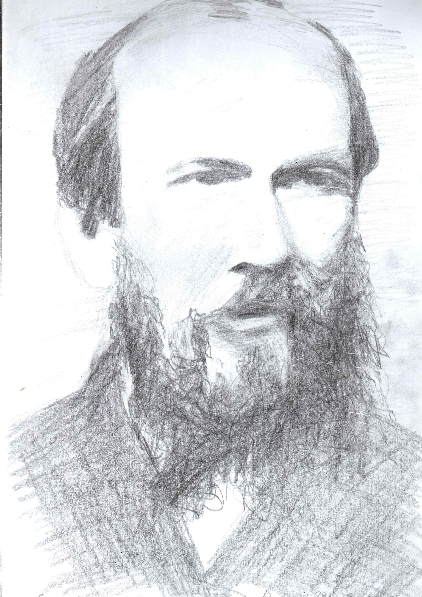

PORTRAIT

Quest 03 / Complete / Exhibition & Study
Giving witness to the human and divine in a world floating on machine-generated content. Eleven observational graphite drawings spanning foundational light studies, drapery, anatomy, and literary portraiture.
01 / Exhibition Hall
Each drawing is hung in its native orientation—seven vertical plates and four horizontal studies—with archival paper mats. Select any work to inspect full tonal detail.











02 / Practice & Method
Academic graphite drawing trains the eye to read value relationships, edge softness, and spatial hierarchy before any digital tool enters the workflow.
Across these eleven plates, the progression moves deliberately from primitive geometry (spheres and crumpled planes) to anatomical structure (skull and eye studies) and finally human character (historical and observational portraits).
Studio Role